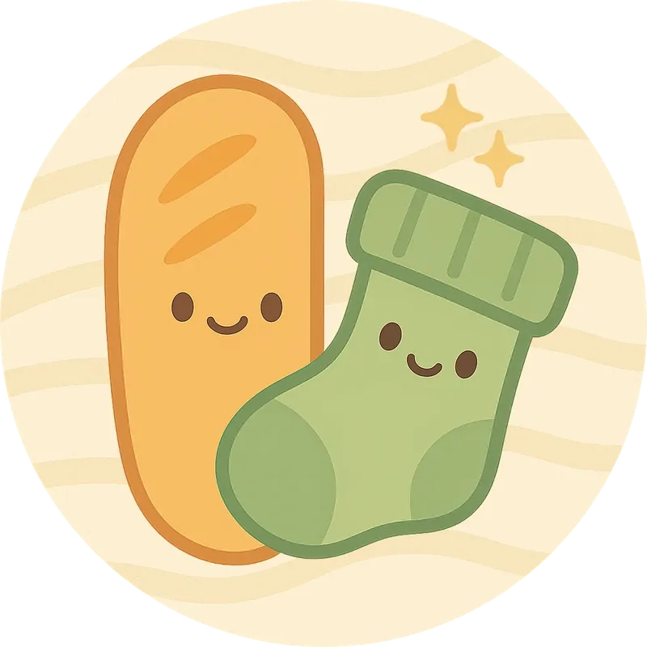
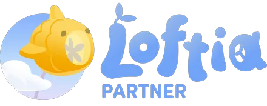

Mercredi
21h00
Du gaming cosy, un humour douteux et une communauté fidèle au poste 🥖

Les trois rendez-vous, et le clip que la commu doit départager.
Des rendez-vous réguliers pour discuter, rire et chiller ensemble !
Choisis ton clip préféré, je révèle le gagnant dimanche en live !
Les pépites créatives de la communauté et les aventures en dehors du live
Baguette prépare Halloween et c'est vous qui décidez de ce qui lui arrive : un défi par semaine, voté en live, à réaliser avec le support de ton choix.
Participer →Trois jours de lives en présentiel à Lyon pour les refuges, et 1 350 € récoltés avec vous ! Mon premier event caritatif, et mon premier IRL 🧡
Voir le recap →Le retour du concours Dress To Impress ! Nouveaux thèmes, looks encore plus fous, et un nouveau podium à départager.
Voir le recap →Être là pendant les lives, c'est déjà énorme. Le reste, c'est la cerise sur la baguette 🥖
Marques, studios, agences : une collab, un partenariat ou une campagne ? Écrivez-moi !Comment me joindre, et les projets que je soutiens.
Intéressé par une collab ? Parlons-en !
Propositions de partenariats ou de sponsoring.
Demandes professionnelles et projets spéciaux.
Media kit
Je collabore avec certains studios pour présenter leurs jeux à ma communauté. Voici les projets que je soutiens actuellement !

Loftia est un MMO cosy et multijoueur où tu construis ta vie sur des îles flottantes. Tu peux créer ton quartier avec d’autres joueurs, farmer et craft, explorer en groupe, et participer à des projets communautaires dans un univers solarpunk.
inKONBINI est un jeu narratif cosy et intimiste, inspiré du Japon du début des années 90. Tu incarnes Makoto, une étudiante qui passe l’été à la supérette du village : mise en rayon, présentoirs, réassort, et surtout… des rencontres et petites histoires du quotidien.